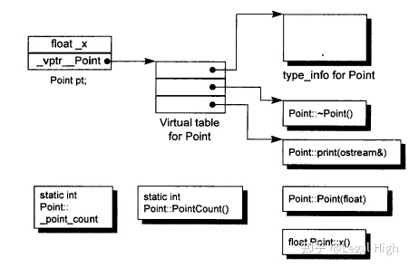
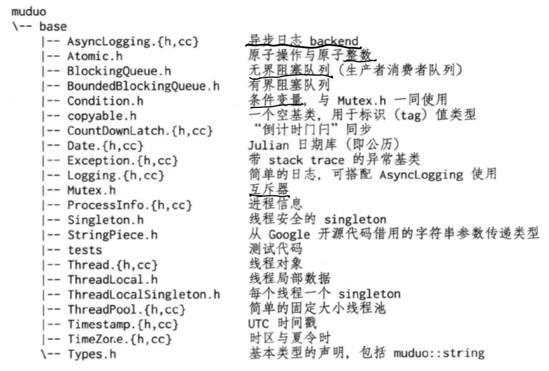
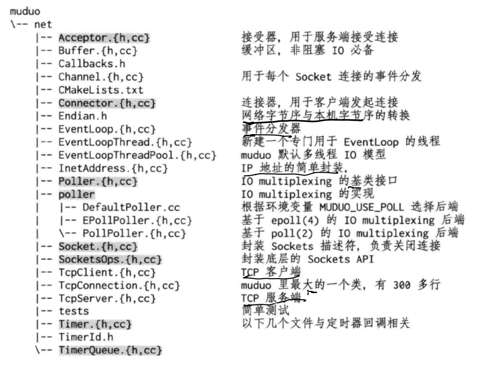
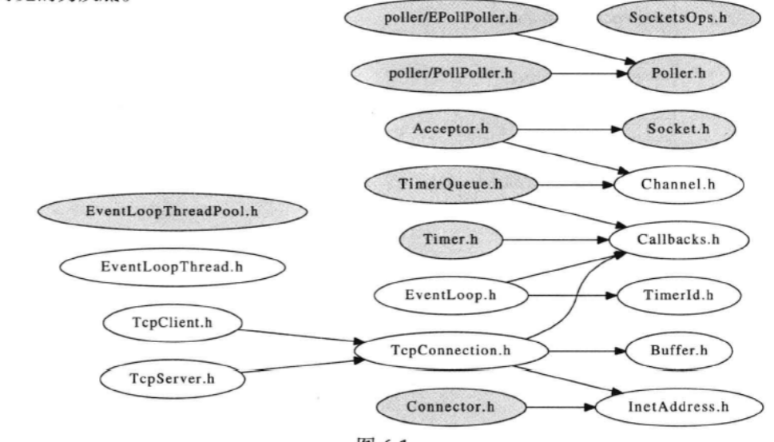
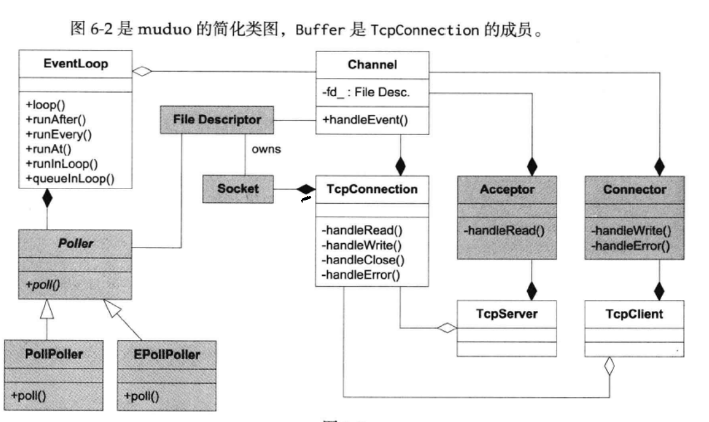
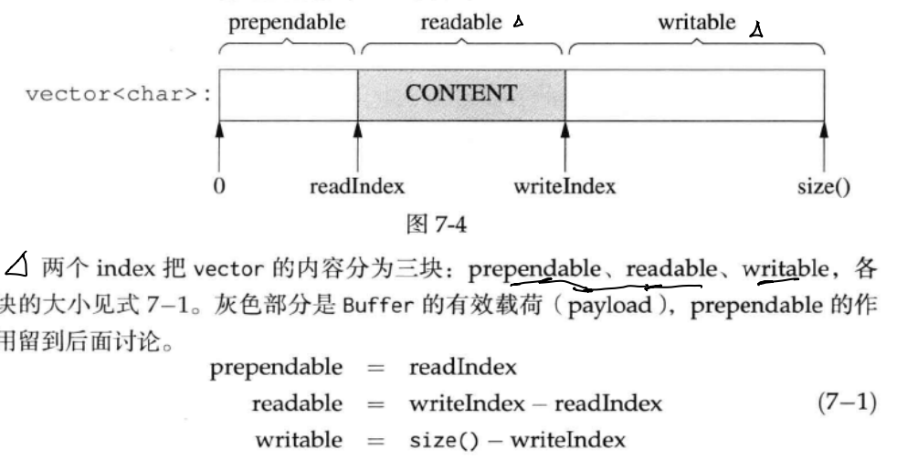

muduo网络库简介
muduo是基于Reactor模式的网络库，核心是事件循环EventLoop，用于响应定时器和IO事件。muduo采用基于对象(object-based)而非面向对象(object-oriented)的设计风格，其事件回调接口多以boost::function+boost::bind表达，用户不需要继承其中的class。

基础库

网络核心库

接口和实现
公开接口
- Buffer, 数据的读写通过buffer进行，用户不需要调用read(2)/write(2)
- InetAddress封装IPv4地址，注意不能解析域名，因为
gethostbyname(3)解析域名会阻塞IO线程。 - EventLoop事件循环，每个线程只能由一个EventLoop对象，负责IO和定时器事件的分派，用eventfd(2)来异步唤醒。用TimerQueue作为定时器管理，用Poller作为IO multiplexing。
- EventLoopThread启动一个线程，在其中运行EventLoop::loop()
- TcpConnection是网络库的核心，封装一次TCP连接，但不能发起连接
- TcpClient用于编写网络客户端，能发起连接，重试
- TcpServer用于服务器，能接受客户的连接
这些类中，TcpConnection的生命期依靠shared_ptr管理，用户和库共同控制，Buffer的生命期由TcpConnection控制，其余类生命期由用户控制。Buffer和InetAddress具有值语义，可以拷贝；其他class都是对象语义，不能拷贝。
内部实现
- Channel负责注册和响应IO事件，但不拥有file descriptor。它是Acceptor, Connector, EventLoop, TimeQueue, TcpConnection的成员，生命期由后者控制。
- Socket是一个RAII handle，封装一个file descriptor，析构时关闭fd。它是Acceptor, TcpConnection的成员，生命期由后者控制。EventLoop, TimeQueue也拥有fd，但不封装为Socket class.
- SocketsOps封装各种Sockets系统调用。
- Poller是PollPoller和EPollPoller的基类，采用电平触发。它是EventLoop的成员，生命期由后者控制
- PollPoller和EPollPoller封装poll(2)和epoll(4)两种IO multiplexing后端，poll的存在价值便于调试，因为poll(2)调用是上下文无关的。
- Connector用于发起TCP连接，它是TcpClient成员，生命期由后者控制
- Acceptor用于接受TCP连接，它是TcpServer成员，生命期由后者控制
- TimeQueue用timerfd实现定时，不需要设置poll/epoll_wait(等待时长)。TimerQueue用std::map管理Timer，它是EventLoop成员，生命期由后者控制。
- EventLoopThreadPoll用于创建IO线程池，用于把TcpConnection分派到EventLoop线程上，是TcpServer成员，生命期由后者控制。


线程模型
每个线程最多一个EventLoop，每个TcpConnection必须归某个EventLoop管理，其所有IO都会被这个线程处理。TcpConnection和EventLoop是线程安全的。
- 单线程,accept(2)和TcpConnection用同一个线程处理IO连接
- 多线程，accept(2)与EventLoop在同一个线程，另外创建一个EventLoopThreadPoll，新的连接被分配到线程池中。
Tcp网络编程三个半事件
TCP网络编程最本质是处理三个半事件
- 连接的建立，包括服务端(accept)新连接和客户端成功发起(connect)新连接，TCP连接一旦建立，客户端和服务端是平等的，可以各自收发数据。
- 连接的断开，包括主动断开(close, shutdown)和被动断开(read(2)返回0)
- 消息到达，文件描述符可读。对该事件的处理方式决定了网络编程的风格，如阻塞非阻塞，处理分包，应用缓冲设计。
- 5 消息发送完毕，算半个。表示数据写入操作系统的缓冲区，将由TCP协议栈负责数据发送和重传，不代表对方收到数据。
TCP示例
muduo中，只需要编写并绑定对应事件回调函数，就能实现三个半事件的处理。
例如discard只需要关注”消息/数据到达”事件，即onMessage
void DiscardServer::onMessage(const TcpConnectionPtr& conn, Buffer* buf, TimeStamp time) {
string msg(buf->retrieveAllAsString());
LOG_INFO << conn->name << " discards " ;
}daytime只需要关注”连接已建立”事件
void DaytimeServer::onConnection(const TcpConnectionPtr& conn) {
LOG_INFO << "DaytimeServer -" ...
if (conn->connected()) {
conn->send(Timestamp::now().toFormattedString() + "\n");
conn->shutdown();
}
}Buffer和文件传输
buffer
TcpConnection必须要有output buffer，用户发送数据时数据先发送到buffer中，等socket文件操作符可写时再一并写入。同时也必须有input buffer，一次收到的数据可能不完整，接收的数据先放到buffer，等构成一条完整信息再通知程序的业务逻辑。
所有muduo的IO都是缓冲IO，用户不会取操作read()或write()某个socket，只会操作TcpConnection的input buffer和output buffer。更确切的，是在onMessage()回调中读取input buffer; 调用TcpConnection::send()间接操作output buffer。
线程安全性，Buffer不是线程安全的，其安全性与std::vector相同。
- 对于input buffer, onMessage()回调始终发生在该TcpConnection所属的IO线程，应用程序应该在onMessage()完成对input buffer的操作，并且不要把input buffer暴露给其他线程。这样Buffer class不必线程安全
- 对于output buffer，应用程序不会直接操作它，而是调用TcpConnection::send()来发送数据，后者是线程安全的。
- 如果TcpConnection::send()调用发生在TcpConnection所属的那个IO线程，那它转而调用TcpConnection::sendInLoop(), sendInLoop会在当前线程操作output buffer; 如果在调用发生在别的线程，它会通过EventLoop::runInLoop()把sendInLoop()函数调用转移到IO线程，这样用IO线程操作output buffer，不会有线程安全问题。至于函数参数的跨线程传递，直接把数据拷贝一份即可。

两个index即readIndex, writeIndex类型是int，记录相对于vector<char>起始位置的偏移，不是指针，这可以避免迭代器失效带来的影响。
底层使用vector可以动态增长空间的大小，但如果原因是prependable太大导致的writable不够则不会增加空间，而是将content挪移到前面腾出writable空间。当readIndex=writeIndex时，缓冲区内容全部读取完，重置readIndex=writeIndex=初始位置。
prependable默认有少量空间，这可以低代价在前面添加几个字节。例如序列化一个消息，但不知道多长，那么可以append()到序列化完成，最后在前面添加消息的长度。
文件传输
TcpConnection提供的send()重载函数如下
class TcpConection : boost :: noncopyable,
public boost::enable_shared_from_this<TcpConnection>
{
public:
void send(const void* message, size_t len);
void send(const StringPiece& message);
void send(Buffer* message);
// void send(Buffer&& message); // c++11
// void send(string&& message); // c++11
};- send返回类型为void，意味着muduo会保证把数据发送给对方
- send()非阻塞，不会阻塞客户调用线程
- send()线程安全，原子，多个线程可以同时调用send,muduo可以保证多线程每个消息的完整性，但顺序可以不同。
- void send(const void* message, size_t len);可以发送任意字节序列
- void send(const StringPiece& message) 可以发送std::string 和const char*
源码分析
uncopyable.h
namespace muduo
{
/// 将构造函数和析构函数设置为protected, 继承者可正常调用
class copyable
{
protected:
copyable() = default;
~copyable() = default;
};
} // namespace muduo
noncopyable.h
namespace muduo
{
class noncopyable
/// 拷贝构造函数和操作符设置delete
/// 派生类无法调用拷贝构造函数, 因为其父类无法执行拷贝构造
/// 构造函数析构函数protected+ default
{
public:
noncopyable(const noncopyable&) = delete;
void operator=(const noncopyable&) = delete;
protected:
noncopyable() = default;
~noncopyable() = default;
};
} // namespace muduoAtomic.h
原子类是int类型的原子类, 且是一个模板类, 可实例化typedef AtomicIntegerT<int32_t> AtomicInt32;
原子类实现的方法是gcc内置原子操作, 例如__sync_fetch_and_add(&value_, x)对*value执行原子加法, CAS __sync_val_compare_and_swap (type *ptr, type oldval, type newval, ...) 如果ptr所指向的内存地址存放的值与oldval相同的话, 则将其用newval的值替换。
type __sync_val_compare_and_swap (type *ptr, type oldval, type newval, ...)
/* 对应的伪代码 */
{ if (*ptr == oldval) { *ptr = newval; }
return oldval;
}namespace muduo
{
namespace detail
{
template<typename T>
class AtomicIntegerT : noncopyable
{
public:
AtomicIntegerT()
: value_(0)
{
}
T get()
{
// in gcc >= 4.7: __atomic_load_n(&value_, __ATOMIC_SEQ_CST)
return __sync_val_compare_and_swap(&value_, 0, 0);
}
T getAndAdd(T x)
{
// in gcc >= 4.7: __atomic_fetch_add(&value_, x, __ATOMIC_SEQ_CST)
return __sync_fetch_and_add(&value_, x);
}
T addAndGet(T x)
{
return getAndAdd(x) + x;
}
...
T getAndSet(T newValue)
{
// in gcc >= 4.7: __atomic_exchange_n(&value_, newValue, __ATOMIC_SEQ_CST)
return __sync_lock_test_and_set(&value_, newValue);
}
private:
volatile T value_;
};
} // namespace detail
typedef detail::AtomicIntegerT<int32_t> AtomicInt32;
typedef detail::AtomicIntegerT<int64_t> AtomicInt64;
} // namespace muduothread.h
thread的基本功能是传入一个函数, 调用start()方法开始执行, 并可以返回线程的状态。
pthread id是pthread库提供的ID，在系统级别没有意义。pid都是线程组leader的进程ID, 使用
getpid()获取。而tid是线程ID，syscall(SYS_gettid)获取。pid和tid均全局唯一。基本逻辑, pthread_create创建线程执行startThread, startThread调用ThreadData对象执行对象runInThread()成员方法。
/// thread.h
class Thread : noncopyable
{
public:
typedef std::function<void ()> ThreadFunc;
explicit Thread(ThreadFunc, const string& name = string());
// FIXME: make it movable in C++11
~Thread();
void start();
int join(); // return pthread_join()
bool started() const { return started_; }
// pthread_t pthreadId() const { return pthreadId_; }
pid_t tid() const { return tid_; }
const string& name() const { return name_; }
static int numCreated() { return numCreated_.get(); }
private:
void setDefaultName();
/// 状态变量
bool started_;
bool joined_;
/// pthreadId_, 用来执行pthread_join等pthread函数
pthread_t pthreadId_;
/// tid, 用来线程标识
pid_t tid_;
ThreadFunc func_;
string name_;
/// 倒计时
CountDownLatch latch_;
static AtomicInt32 numCreated_;
};Thread.cc
/// thread.cpp
/// 返回当前thread的tid
pid_t gettid()
{
return static_cast<pid_t>(::syscall(SYS_gettid));
}
void afterFork()
{
muduo::CurrentThread::t_cachedTid = 0;
muduo::CurrentThread::t_threadName = "main";
CurrentThread::tid();
// no need to call pthread_atfork(NULL, NULL, &afterFork);
}
class ThreadNameInitializer
{
public:
ThreadNameInitializer()
{
muduo::CurrentThread::t_threadName = "main";
CurrentThread::tid();
/// fork之后, 子线程调用afterFork()函数
pthread_atfork(NULL, NULL, &afterFork);
}
};
ThreadNameInitializer init;
/// 封装一个线程
struct ThreadData
{
/// 线程要执行的函数
typedef muduo::Thread::ThreadFunc ThreadFunc;
ThreadFunc func_;
string name_;
pid_t* tid_;
/// 倒计时
CountDownLatch* latch_;
// 线程私有变量
ThreadData(ThreadFunc func,
const string& name,
pid_t* tid,
CountDownLatch* latch)
: func_(std::move(func)),
name_(name),
tid_(tid),
latch_(latch)
{ }
// 线程内部的具体执行
void runInThread()
{
*tid_ = muduo::CurrentThread::tid();
tid_ = NULL;
latch_->countDown();
latch_ = NULL;
muduo::CurrentThread::t_threadName = name_.empty() ? "muduoThread" : name_.c_str();
/// 设置线程名
::prctl(PR_SET_NAME, muduo::CurrentThread::t_threadName);
// 执行线程内部函数
try
{
func_();
muduo::CurrentThread::t_threadName = "finished";
}
/// 出现异常, 打印stderr
catch (const Exception& ex)
{
muduo::CurrentThread::t_threadName = "crashed";
// 将字符串拷贝到标准错误流
fprintf(stderr, "exception caught in Thread %s\n", name_.c_str());
fprintf(stderr, "reason: %s\n", ex.what());
fprintf(stderr, "stack trace: %s\n", ex.stackTrace());
abort();
}
catch (const std::exception& ex)
{
muduo::CurrentThread::t_threadName = "crashed";
fprintf(stderr, "exception caught in Thread %s\n", name_.c_str());
fprintf(stderr, "reason: %s\n", ex.what());
abort();
}
catch (...)
{
muduo::CurrentThread::t_threadName = "crashed";
fprintf(stderr, "unknown exception caught in Thread %s\n", name_.c_str());
throw; // rethrow
}
}
};
// 开启线程, pthread_create执行的函数
/// 传入void*, static_cast为ThreadData*
void* startThread(void* obj)
{
ThreadData* data = static_cast<ThreadData*>(obj);
/// 转去执行runInThread
data->runInThread();
delete data;
return NULL;
}
/// 睡眠一会
void CurrentThread::sleepUsec(int64_t usec)
{
struct timespec ts = { 0, 0 };
ts.tv_sec = static_cast<time_t>(usec / Timestamp::kMicroSecondsPerSecond);
ts.tv_nsec = static_cast<long>(usec % Timestamp::kMicroSecondsPerSecond * 1000);
::nanosleep(&ts, NULL);
}
AtomicInt32 Thread::numCreated_;
/// Thread class
Thread::Thread(ThreadFunc func, const string& n)
: started_(false),
joined_(false),
pthreadId_(0),
tid_(0),
func_(std::move(func)),
name_(n),
latch_(1)
{
setDefaultName();
}
Thread::~Thread()
{
if (started_ && !joined_)
{
pthread_detach(pthreadId_);
}
}
void Thread::setDefaultName()
{
int num = numCreated_.incrementAndGet();
if (name_.empty())
{
char buf[32];
snprintf(buf, sizeof buf, "Thread%d", num);
name_ = buf;
}
}
// 创建线程并执行
void Thread::start()
{
assert(!started_);
started_ = true;
// FIXME: move(func_)
/// ThreadData类
detail::ThreadData* data = new detail::ThreadData(func_, name_, &tid_, &latch_);
/// 创建线程, 执行startThread函数, 传入参数为ThreadData
if (pthread_create(&pthreadId_, NULL, &detail::startThread, data)) // 创建失败，返回1
{
started_ = false;
delete data; // or no delete?
LOG_SYSFATAL << "Failed in pthread_create";
}
else
// 线程创建成功
{
latch_.wait();
assert(tid_ > 0);
}
}
// pthread_join
int Thread::join()
{
assert(started_);
assert(!joined_);
joined_ = true;
return pthread_join(pthreadId_, NULL);
}thread_local
thread_local是存储在线程内部的私有变量
- 使用
pthread_key_create设置私有变量, 使用pthread_getspecific获取私有变量 - 私有变量通过key-value读取, key类型为
pthread_key_t
template<typename T>
class ThreadLocal : noncopyable
{
public:
ThreadLocal()
{
/// 线程私有变量
MCHECK(pthread_key_create(&pkey_, &ThreadLocal::destructor));
}
~ThreadLocal()
{
MCHECK(pthread_key_delete(pkey_));
}
T& value()
{
T* perThreadValue = static_cast<T*>(pthread_getspecific(pkey_)); // 读取私有数据, 获取线程内部储存的值
if (!perThreadValue) // 如果线程内没有该对象，则重新创建一个
{
T* newObj = new T();
MCHECK(pthread_setspecific(pkey_, newObj));
perThreadValue = newObj;
}
return *perThreadValue;
}
private:
static void destructor(void *x)
{
/// x强制转型为T*
T* obj = static_cast<T*>(x);
/// 如果sizeof(T) == 0(不正确), 则编译器会报错T_must_be_complete_type[-1]
/// 下面这句话只允许sizeof(T) != 0
typedef char T_must_be_complete_type[sizeof(T) == 0 ? -1 : 1];
T_must_be_complete_type dummy; (void) dummy;
/// delete x指向的对象
delete obj;
}
private:
/// 线程私有变量
pthread_key_t pkey_;
};单例线程私有变量 ThreadLocalSingleton
- 初始化ThreadLocalSingleton前, 静态成员变量 Deleter已经初始化, 创建单独的线程变量的键pkey_
- 初始化ThreadLocalSingleton后, 调用static T& instance(), 可以经Deleter::set() 用
pthread_setspecific(pkey_, newObj)设置当前pkey_的私有变量的单一实例。 - 调用ThreadLocalSingleton::pointer()返回私有变量对象的指针
- ThreadLocalSingleton与Deleter两个class关系复杂, 不知道为何
template<typename T>
class ThreadLocalSingleton : noncopyable
{
public:
// thread_local是单例的，不提供构造函数和析构函数
ThreadLocalSingleton() = delete;
~ThreadLocalSingleton() = delete;
/// 获取线程私有变量的唯一intance
static T& instance()
{
if (!t_value_)
{
t_value_ = new T(); // 线程内部对象
deleter_.set(t_value_); /// 置入线程
}
return *t_value_;
}
static T* pointer()
{
return t_value_;
}
private:
static void destructor(void* obj)
{
assert(obj == t_value_);
typedef char T_must_be_complete_type[sizeof(T) == 0 ? -1 : 1];
T_must_be_complete_type dummy; (void) dummy;
delete t_value_;
t_value_ = 0;
}
class Deleter
{
public:
Deleter()
{
// 创建单独的线程变量的键pkey_, 清理函数为destructor线程释放该线程存储的时候被调用。
pthread_key_create(&pkey_, &ThreadLocalSingleton::destructor);
}
~Deleter()
{
pthread_key_delete(pkey_);
}
// 需要存储特殊值调用 pthread_setspcific()
void set(T* newObj)
{
assert(pthread_getspecific(pkey_) == NULL);
/// 设置线程私有变量
pthread_setspecific(pkey_, newObj);
}
pthread_key_t pkey_;
};
/// 前置__thread说明t_value_是私有变量
static __thread T* t_value_;
static Deleter deleter_;
};
template<typename T>
__thread T* ThreadLocalSingleton<T>::t_value_ = 0;ThreadPool 线程池
- 线程池是维护若干线程, 之后想用线程池执行任务, 只需要调用
run函数就行了 - run 函数使要执行的task进入任务队列, 注意进队列之前等待任务队列未满, 进队列后令条件变量任务队列非空为true
- thread_pool的start(), 创建线程vector, 每个线程执行runInthread函数
runInthread函数执行任务出队列, 当然要上锁等待任务队列非空- 线程池是一个消费者-生产者模型, task队列是生产者, 线程vector是消费者。使用一个mutex, 生产者等待queue未满, 消费者等待queue非空。queue是共享变量。
class ThreadPool : noncopyable
class ThreadPool : noncopyable
{
public:
/// 线程需要执行的函数, std::function<void() >
typedef std::function<void ()> Task;
explicit ThreadPool(const string& nameArg = string("ThreadPool"));
~ThreadPool();
// Must be called before start().
void setMaxQueueSize(int maxSize) { maxQueueSize_ = maxSize; }
/// 线程初始化之后的回调函数
void setThreadInitCallback(const Task& cb)
{ threadInitCallback_ = cb; }
void start(int numThreads);
void stop();
const string& name() const
{ return name_; }
/// 任务队列当前大小
size_t queueSize() const;
/// 使用线程池执行任务
void run(Task f);
private:
bool isFull() const REQUIRES(mutex_);
void runInThread();
Task take();
mutable MutexLock mutex_;
/// 条件变量
Condition notEmpty_ GUARDED_BY(mutex_);
Condition notFull_ GUARDED_BY(mutex_);
string name_;
/// 线程初始化回调函数
Task threadInitCallback_;
/// thread vectors, 用unique_ptr维护, 因为thread不可拷贝
std::vector<std::unique_ptr<muduo::Thread>> threads_;
/// 任务队列
std::deque<Task> queue_ GUARDED_BY(mutex_);
size_t maxQueueSize_;
bool running_;
};thread_pool.cpp
/// 线程池初始化
ThreadPool::ThreadPool(const string& nameArg)
: mutex_(),
notEmpty_(mutex_),
notFull_(mutex_),
name_(nameArg),
maxQueueSize_(0),
running_(false)
{
}
ThreadPool::~ThreadPool()
{
if (running_)
{
stop();
}
}
/// 线程池start
/// 创建线程vector, 每个线程执行runInthread函数
void ThreadPool::start(int numThreads)
{
assert(threads_.empty());
running_ = true; // running
// 分配空间, 即capacity的值
threads_.reserve(numThreads);
for (int i = 0; i < numThreads; ++i)
{
char id[32];
snprintf(id, sizeof id, "%d", i+1);
/// 创建线程初始化执行runInThread函数, 并进入线程池
threads_.emplace_back(new muduo::Thread(
std::bind(&ThreadPool::runInThread, this), name_+id));
/// 该线程开始运行
threads_[i]->start();
}
/// 线程数目为0
if (numThreads == 0 && threadInitCallback_)
{
threadInitCallback_();
}
}
/// 线程池stop
void ThreadPool::stop()
{
{
MutexLockGuard lock(mutex_);
/// 设置
running_ = false;
/// 释放条件变量, 使剩下的线程可顺利执行完毕
notEmpty_.notifyAll();
notFull_.notifyAll();
}
/// 等待所有线程执行完毕
for (auto& thr : threads_)
{
thr->join();
}
}
/// 返回任务队列size
size_t ThreadPool::queueSize() const
{
MutexLockGuard lock(mutex_);
return queue_.size();
}
/// 使用线程池执行task
void ThreadPool::run(Task task)
{
/// 如果线程为空, 主线程执行task
if (threads_.empty())
{
task();
}
else
{
MutexLockGuard lock(mutex_);
while (isFull() && running_)
{
/// 等待任务队列notFull_ is true
notFull_.wait();
}
if (!running_) return;
assert(!isFull());
/// 任务task入队列
queue_.push_back(std::move(task));
/// 发出任务队列非空条件变量
notEmpty_.notify();
}
}
ThreadPool::Task ThreadPool::take()
{
MutexLockGuard lock(mutex_);
// always use a while-loop, due to spurious wakeup
while (queue_.empty() && running_)
{
/// 等待任务队列非空, notEmpty_ is true
notEmpty_.wait();
}
Task task;
if (!queue_.empty())
{
/// 任务出队列
task = queue_.front();
queue_.pop_front();
if (maxQueueSize_ > 0)
{
/// 释放任务队列未满条件变量
notFull_.notify();
}
}
return task;
}
bool ThreadPool::isFull() const
{
mutex_.assertLocked();
/// queue_.size() >= maxQueueSize_说明队列满了
return maxQueueSize_ > 0 && queue_.size() >= maxQueueSize_;
}
/// 线程池的线程执行函数
void ThreadPool::runInThread()
{
try
{
if (threadInitCallback_)
{
threadInitCallback_();
}
// 控制线程的执行
while (running_)
{
/// 任务出队列
Task task(take());
/// 执行任务
if (task)
{
task();
}
}
}
...
}mutex.h
根据
pthread_mutex封装MutexLock, 构造和析构, 分别对应pthread_mutex_init和pthread_mutex_destroy上锁mutex.lock(),
pthread_mutex_lock(&mutex_), 同时记录上锁的线程CurrentThread::tid()释放锁mutex.unlock()pthread_mutex_unlock(&mutex_)有一个函数
isLockedByThisThread判断当前线程是否获得锁基于MutexLock实现MutexLockGuard方法。
class CAPABILITY("mutex") MutexLock : noncopyable
{
public:
// 初始化MutexLock, pthread_mutex_init(&mutex)
MutexLock()
: holder_(0)
{
/// MCHECK宏定义， 检查返回值, 否则直接退出程序
MCHECK(pthread_mutex_init(&mutex_, NULL));
}
// 析构MutexLock, pthread_mutex_destroy
~MutexLock()
{
assert(holder_ == 0);
MCHECK(pthread_mutex_destroy(&mutex_));
}
// must be called when locked, i.e. for assertion
bool isLockedByThisThread() const
{
return holder_ == CurrentThread::tid();
}
void assertLocked() const ASSERT_CAPABILITY(this)
{
assert(isLockedByThisThread());
}
// internal usage
// 加锁,获得锁
void lock() ACQUIRE()
{
MCHECK(pthread_mutex_lock(&mutex_));
assignHolder();
}
// 释放锁
void unlock() RELEASE()
{
unassignHolder();
MCHECK(pthread_mutex_unlock(&mutex_));
}
pthread_mutex_t* getPthreadMutex() /* non-const */
{
return &mutex_;
}
private:
friend class Condition;
class UnassignGuard : noncopyable
{
public:
explicit UnassignGuard(MutexLock& owner)
: owner_(owner)
{
owner_.unassignHolder();
}
~UnassignGuard()
{
owner_.assignHolder();
}
private:
MutexLock& owner_;
};
void unassignHolder()
{
holder_ = 0;
}
void assignHolder()
{
holder_ = CurrentThread::tid();
}
pthread_mutex_t mutex_;
pid_t holder_;
};
/// RAII方法, 实现MutexLockGuard
class SCOPED_CAPABILITY MutexLockGuard : noncopyable
{
public:
explicit MutexLockGuard(MutexLock& mutex) ACQUIRE(mutex)
: mutex_(mutex)
{
mutex_.lock();
}
~MutexLockGuard() RELEASE()
{
mutex_.unlock();
}
private:
MutexLock& mutex_;
};条件变量 Condtion.h
用
pthread_cond封装Condtion, 构造函数和析构函数分别为pthread_cond_init(&pcond_, NULL),pthread_cond_destroy(&pcond_)wait使用pthread_cond_wait(pthread_cond_t *cond, pthread_mutex_t *mutex), 前提是已经用mutex上锁了。notify用pthread_cond_signal(&pcond_)唤醒条件变量pcond_
class Condition : noncopyable
{
public:
// 初始化条件变量
// 信号配合着mutex使用
explicit Condition(MutexLock& mutex)
: mutex_(mutex)
{
MCHECK(pthread_cond_init(&pcond_, NULL));
}
~Condition()
{
MCHECK(pthread_cond_destroy(&pcond_));
}
/// wait pcond_变为true
void wait()
{
/// 先获得锁
MutexLock::UnassignGuard ug(mutex_);
// int pthread_cond_wait(pthread_cond_t *cond, pthread_mutex_t *mutex);
// wait() 释放mutex并阻塞
// wait被唤醒后，需要重新获得mutex才继续执行
/// 如果wait中, 则释放锁(别的线程可以获得锁了), 等待被唤醒
MCHECK(pthread_cond_wait(&pcond_, mutex_.getPthreadMutex()));
}
// returns true if time out, false otherwise.
bool waitForSeconds(double seconds);
/// 唤醒wait()的线程
void notify()
{
MCHECK(pthread_cond_signal(&pcond_));
}
void notifyAll()
{
MCHECK(pthread_cond_broadcast(&pcond_));
}
private:
MutexLock& mutex_;
pthread_cond_t pcond_;
};